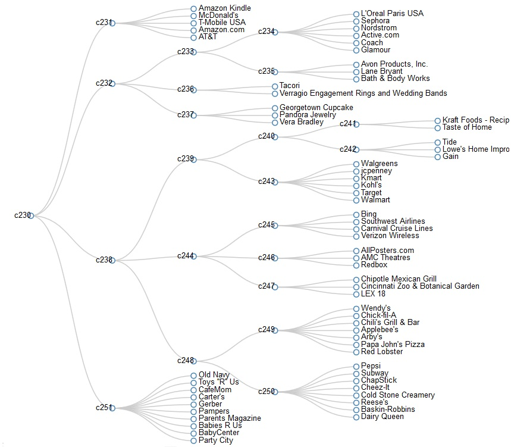
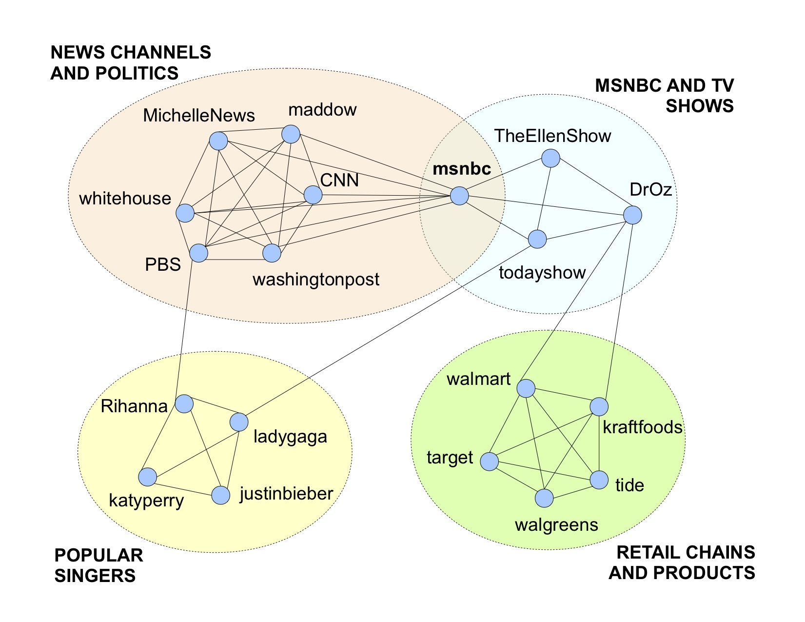
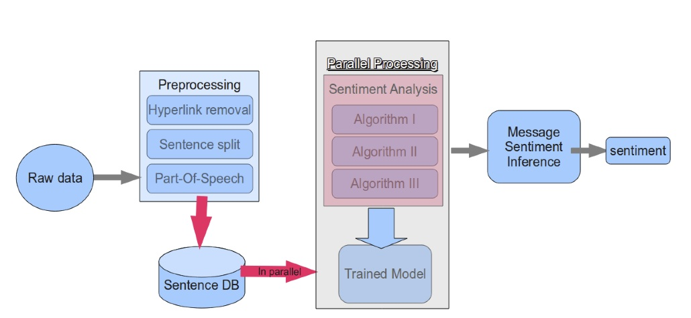
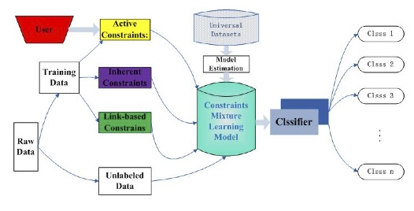
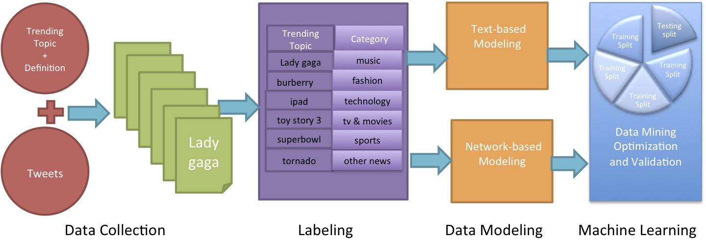
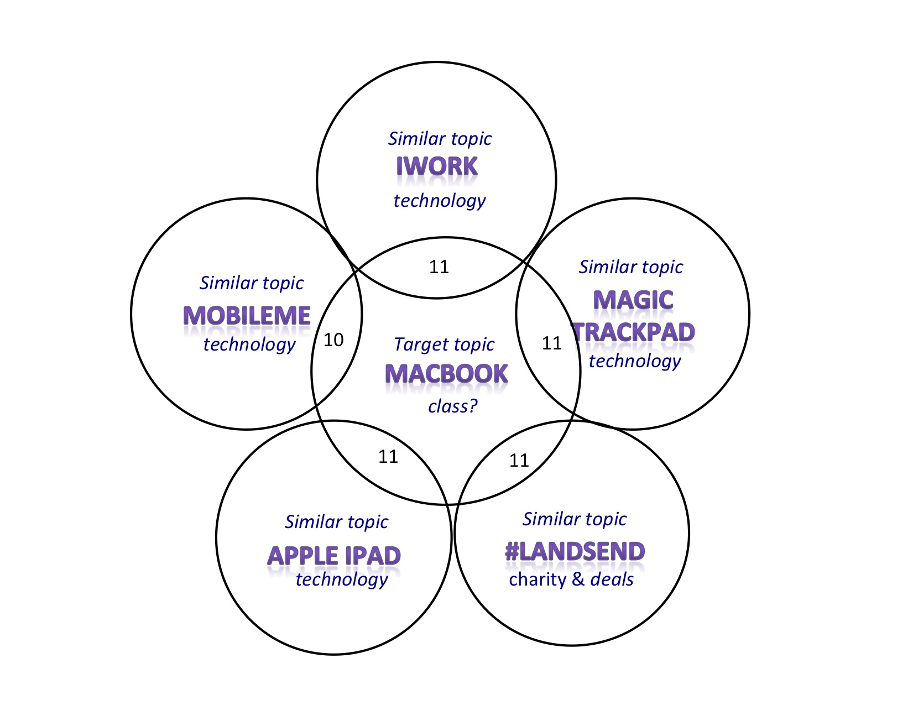

Sponsor:
National Science Foundation (NSF)Project Team Members:
- Alok Choudhary
- Wei-keng Liao
- Ankit Agrawal
- Mostofa Patwary
- Zhengzhang Chen
- Yu Cheng
- Dan Honbo
- Kathy Lee
- Diana Palsetia
- Yves Xie
- Kunpeng Zhang
- Bharath Pattabiraman

Understanding, Analyzing, and Retrieving Knowledge from Social Media
Overview
Social Media has become one of the most popular platforms to allow users to communicate, and share their interests without being at the same geographical location. With the rapid growth of Social Media sites such as Facebook, LinkedIn, Twitter, Customer reviews (e.g. Amazon, CNET) and Blogs (e.g. WSJ Blogs), there is vast amount of user-generated content. Our goal is to retrieve valuable nuggets of knowledge from this huge amount of data and help users make informed decisions. To achieve this goal, the specfic objectives of the project are as follows.
- Constructing useful information networks from raw datasets.
- Understanding and analysizing useful structures, patterns, and communities in networks.
- Analysis of temporal and special dynamics in networks.
- Analysis of social reputation, influence, and trust.
- User activity modeling, profiling, exploration, and recommendation systems.
- Developing new data mining and machine learning algorithms for social networks.
- New applications and impact of social media in other areas of research.
Community Mining
The rapid evolution of modern social networks motivates the design and understanding of networks based on users' interest. Using popular social media such as Facebook and Twitter, we present new perspective to bring out more meaningful information about the networks. Instead of using traditional user networks of Facebook and Twitter, we deduce user interest based networks using posts, comments, and tweets. Our approach is able to closely capture relations found in static networks and also finds affiliations that are constantly evolving either due to temporal or spatial activities. Further, we develop a new approach for mining communities to understand and analyze the structure of social networks. Our user-interest based model and community extraction algorithm together can be used to identify target communities in the context of business requirements. Figure 1 shows several such focused communities that belong to categories such as Technology (c231), Consumer Merchandize (c232), Retail (c243), Travel and Leisure (c244), Food (c248) and Baby Products (c251). We got many more interesting focused communities. Note that using the existing approaches, most of these focused communities belong to one large community, which does not reflect the structure of the network.

Figure 1. Partial dendrogram showing communities in Facebook.

Figure 2. Some Facebook communities detected by our clique-based community finder.
Text Mining
Enormous amounts of messages get published each day on social media sites. For example, Twitter processes 230 million tweets (messages that are 140 characters long) a day (twitterstats). The explosion of textual messages can cause information overload. Our goal is to design systems that can analyze and summarize social media content. The current work encompasses two main themes:
- The goal is to mine opinions from social media data at sentence and document level.
- Design a framework that can determine the sentiment (positive, negative, or neutral) overcoming social slang and lingos, non-textual expressions and language.
- The goal is to group similar text or messages that can make information more manageable.
- Employ framework that can cluster similar text belong to the same topic and several similar topics that can belong to a broad category.
Sentiment Analysis
SES Framework
The Sentiment Elicitation System (SES) is a sentiment identification framework which consists of three sentiment identification algorithms. First algorithm is based on Compositional Semantic Rules. The rule set is augmented to overcome poor grammar and part-of-speech tagging and results in numeric score in the range -10 to +10. The second algorithm associates numeric score in the range -5 to +5 for textual sentiments by incorporating user star ratings in reviews along with word appear frequency. The third algorithm makes use of emoticons, negation word position and domain-specific words and characterizes the sentiment as positive, negative or neutral. A predictive model (e.g. Decision Tree, Neural Network) is trained on 3 basic features i.e. output of each of the three algorithms namely S1, S2 and S3 and two derived features: a) S1 + S2 b) S2 - S1 to predict sentiment.
Figure 3: SES Architechture.
Text classification
Constraint Mixture Clustering Framework
The proposed framework utilizes priori information such as label signs or pairwise constraints that can easily obtained from the social media sites with very little human intervention. For example, messages on Barak Obama's Facebook page and comments made by other users on these messages are constrained to the class politics. The framework integrates pairwise constraints and labels to infer data for learning. The framework uses model-based clustering/classification in which the data is generated by a model and tries to recover the original model from the data. The model recovered defines the clusters and assignment of data points to clusters. The proposed framework shows significant improvement over baseline classifiers such as semi-supervised K-Means and Transductive SVM. More details regarding the framework can be found in [pdf]. For future work, the goal of the framework would be to derive the pairwise constraints automatically from auxiliary information for many real world applications.
Figure 4: The general framework of learning to clustering web text with the CML model.
Text and Network based Classification Framework

Figure 5: System Architecture.

Figure 6: Trending topic "macbook" and its 5 similar topics "iwork", "magic trackpad", "#landsend", "apple ipad" and "mobileme".
Publications
- Bharath Pattabiraman, Mostofa Patwary, Assefaw Gebremedhin, Wei-keng Liao, and Alok Choudhary. Fast Algorithms for the Maximum Clique Problem on Massive Graphs with Applications to Overlapping Community Detection, Internet Mathematics, 2014. (pdf)
- Bharath Pattabiraman, Mostofa Patwary, Assefaw Gebremedhin, Wei-keng Liao, and Alok Choudhary. Fast Algorithms for the Maximum Clique Problem on Massive Sparse Graphs, In Proceedings of the 10th Workshop on Algorithms and Models for the Web Graph, Cambridge, MA, Lecture Notes in Computer Science, Springer, vol. 8305, pp. 156-169, 2013. (presentation, pdf)
- Diana Palsetia, Md. Mostofa Ali Patwary, Kunpeng Zhang, Kathy Lee, Christopher Moran, Yves Xie, Daniel Honbo, Ankit Agrawal, Wei-keng Liao, Alok Choudhary "User-Interest based Community Extraction in Social Networks", Sixth Social Network Mining and Analysis(SNA) KDD Workshop 2012.
- Yu Cheng, Kunpeng Zhang, Yusheng Xie, Ankit Agrawal, Wei-keng Liao, and Alok Choudhary, Learning to Group Web Text Incorporating Prior Information, ICDM OEDM 2011.(presentation,pdf)
- Lalith Polepeddi, Ankit Agrawal, and Alok Choudhary, Poll: A Citation-Text-Based System for Identifying High-Impact Contributions of an Article, ICDM DaMNet, 2011. (pdf)
- Kunpeng Zhang, Yu Cheng, Yusheng Xie, Ankit Agrawal, Diana Palsetia, Kathy Lee, and Alok Choudhary, SES: Sentiment Elicitation System for Social Media Data, ICDM-SENTIRE 2011. (presentation,pdf)
- Kathy Lee, Diana Palsetia, Md. Mostofa Ali Patwary, Ankit Agrawal, Alok Choudhary, and Ramanathan Narayanan, Twitter Trending Topic Classification, ICDM OEDM 2011. (presentation,pdf)
- Kunpeng Zhang, Yu Cheng, Wei-keng Liao, Alok Choudhary, Mining Millions of Reviews: A Technique to Rank Products Based on Importance of Reviews.(presentation , pdf).This paper was awarded Honourable Mention at the conference ICEC 2011, Liverpool, England.
Related Work
DiscKNet: Discovering Knowledge from Scientific Research Networks.
Source Code
Fast algorithms to find maximum clique in massive graphs
Sentiment Service (API)
Register for trial version of sentiment service (API)